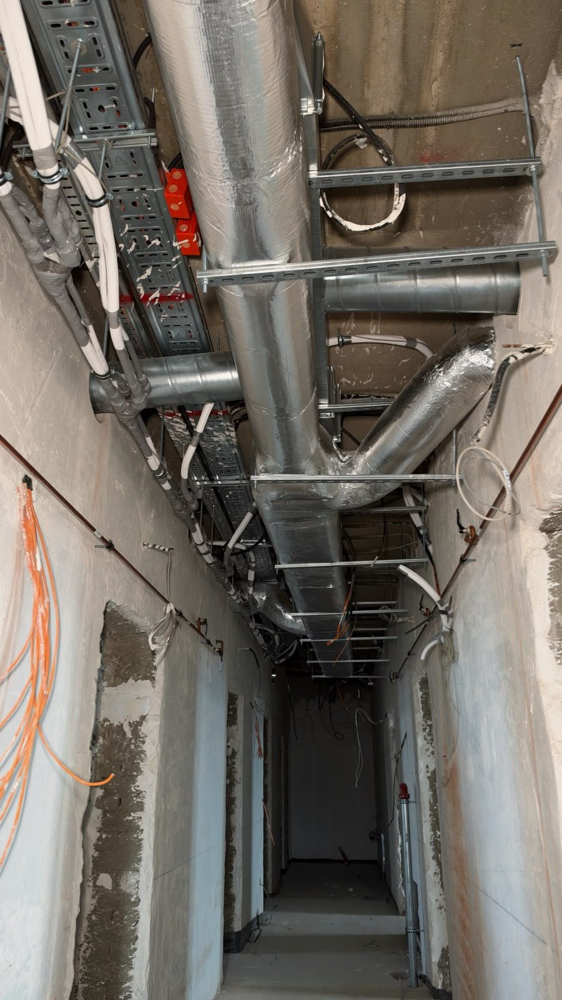
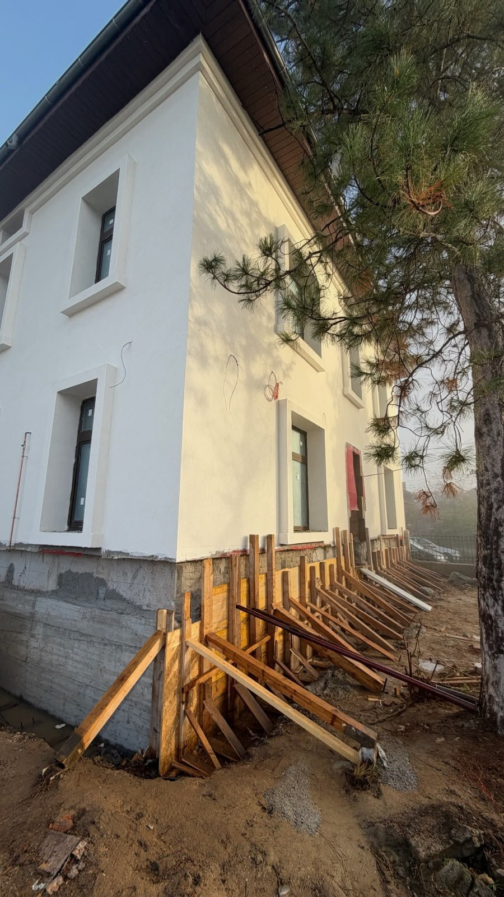

Investițiile în infrastructura medicală din județul Mehedinți continuă, iar unul dintre șantierele aflate în plină desfășurare este cel de la Pavilionul Dermato-Venerice din Drobeta-Turnu Severin. Lucrările de modernizare și amenajare, susținute de Consiliul Județean Mehedinți, avansează pe mai multe fronturi, iar o parte dintre operațiuni au fost deja finalizate.
Echipele societății ZEBLEX intervin în prezent în mai multe zone ale clădirii, unde se execută lucrări de compartimentare, instalații medicale, ventilație și finisaje interioare. Proiectul înaintează astfel către următoarele etape de execuție, cu scopul de a transforma pavilionul într-un spațiu medical modern și funcțional.
Un șantier cu mai multe fronturi de lucru deschise simultan
Modernizarea Pavilionului Dermato-Venerice reprezintă o investiție importantă pentru infrastructura sanitară din Drobeta-Turnu Severin, în contextul eforturilor de îmbunătățire a condițiilor în care sunt oferite serviciile medicale la nivelul județului.
Activitatea din șantier este organizată pe etape, iar constructorii se concentrează în paralel atât pe amenajarea interioară, cât și pe instalațiile necesare funcționării corecte a spațiilor medicale. Lucrările sunt complexe și presupun o succesiune strictă de operațiuni tehnice – de la compartimentări și montarea instalațiilor, până la finisarea încăperilor – pentru ca spațiile să fie adaptate cerințelor specifice unei unități sanitare.
Compartimentări din gips-carton pentru grupurile sanitare
Printre lucrările aflate în desfășurare se numără realizarea compartimentărilor din gips-carton pentru grupurile sanitare. Este o etapă esențială în organizarea funcțională a spațiilor interioare, care stabilește modul în care vor fi utilizate încăperile de către pacienți și personalul medical.
Sistem de ventilație nou pentru circulația și evacuarea aerului
Totodată, constructorii montează tubulatura aferentă sistemului de ventilație. Această componentă este vitală într-o clădire medicală, deoarece asigură circulația și evacuarea corespunzătoare a aerului în interiorul pavilionului, contribuind la condiții mai bune de igienă și confort.

Rampe medicale și coloane de distribuție
Un alt capitol important al investiției îl reprezintă instalarea rampelor medicale și a coloanelor de distribuție aferente. Aceste elemente fac parte din infrastructura tehnică indispensabilă desfășurării activității medicale și pregătesc spațiile pentru dotările specifice unui pavilion de specialitate.
Lucrările cer atenție la detalii și respectarea cerințelor tehnice din domeniul sanitar, astfel încât fiecare componentă să fie integrată corect în ansamblul clădirii.
Finisajele interioare intră într-o nouă etapă
În paralel cu instalațiile și compartimentările, au început și operațiunile de finisare. În prezent, echipele execută zugrăvelile cu vopsea lavabilă, etapă care conturează aspectul final al încăperilor și le pregătește pentru continuarea lucrărilor de amenajare.
Aceste intervenții completează operațiunile tehnice deja realizate, iar fiecare etapă încheiată apropie obiectivul de forma finală prevăzută în proiectul de modernizare.
De ce contează această investiție pentru pacienții din Mehedinți
Modernizarea Pavilionului Dermato-Venerice face parte din seria investițiilor susținute de Consiliul Județean Mehedinți pentru îmbunătățirea infrastructurii medicale din județ.
Spațiile medicale corespunzătoare sunt esențiale atât pentru pacienții care au nevoie de consultații și tratamente de specialitate, cât și pentru cadrele medicale care își desfășoară zilnic activitatea în unitățile sanitare. Prin astfel de proiecte se urmăresc condiții mai bune pentru actul medical, spații mai funcționale și o infrastructură adaptată cerințelor actuale din domeniul sănătății.
Modernizarea unei clădiri medicale nu înseamnă doar renovare și finisaje, ci și o infrastructură tehnică solidă, care să permită folosirea eficientă și în condiții adecvate a spațiilor destinate pacienților și personalului medical.

ZEBLEX continuă lucrările pentru finalizarea investiției
Prin mobilizarea echipelor în șantier și desfășurarea simultană a mai multor categorii de lucrări, ZEBLEX continuă implementarea etapelor de execuție prevăzute în proiect. De la compartimentări și montajul instalațiilor, până la finisajele interioare, toate intervențiile au un obiectiv comun: un pavilion modernizat, care să răspundă mai bine nevoilor activității medicale.
Modernizarea Pavilionului Dermato-Venerice din Drobeta-Turnu Severin este, astfel, un pas important pentru infrastructura sanitară locală și pentru îmbunătățirea condițiilor oferite pacienților din județul Mehedinți. Investițiile în sănătate rămân o prioritate pentru comunitate, iar modernizarea unităților medicale este o condiție necesară pentru servicii sanitare de calitate.
🏥 Pe scurt
Obiectiv: modernizarea și amenajarea Pavilionului Dermato-Venerice, Drobeta-Turnu Severin
Investiție susținută de: Consiliul Județean Mehedinți
Constructor: ZEBLEX
Lucrări în desfășurare: compartimentări gips-carton, tubulatură de ventilație, rampe medicale și coloane de distribuție, zugrăveli cu vopsea lavabilă
Stadiu: o parte dintre operațiuni finalizate, proiectul avansează spre următoarele etape
Urmăriți secțiunea Actualitate de pe MehedintiAzi.ro pentru cele mai noi informații despre investițiile din județ și pagina de Facebook Mehedinți Azi.
Redactia MehedintiAzi.ro